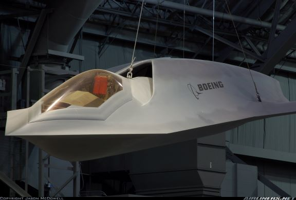

Summary
It would cover a brief description of the aircraft, the time it was active, and who developed it. Both the yf-118g and the yf-23 are prototype aircraft that never made it to mass production. Either because it was meant to test ideas and technologies, or fell out of favor for an alternative.
| Companies | First Flight | Percurment | |
|---|---|---|---|
| yf-118g | Boeing | September 1996 | 1 |
| yf-23 | Northrop Grumman | October 1990 | 2 |
